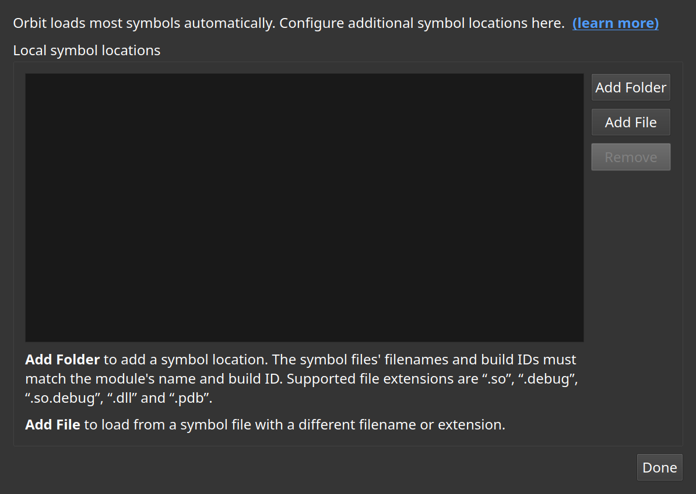

Symbol locations
Where Orbit looks for the debug information it needs to name functions.
A stripped binary carries no function names, and Orbit is not much use without them. This dialog is where the directories holding separate debug files are listed, where a module can be pointed at a specific symbol file, and where the Microsoft symbol server can be turned on for Windows modules.
